Base
CavernasNo se construye. Entrena aldeanos, recibe todos los recursos y es donde se sube de edad. Con «Refugio» guarda a tus aldeanos; si baja a la mitad de su vida, salen a escapar.
- Vida
- 1200
- Población
- +10
- Ataque
- 4 · alcance 6
- Refugio
- 15
Manual del juego
Las cinco edades, cada edificio, cada unidad, las tres civilizaciones y cómo funciona el mundo. Con los dibujos del juego.
Este manual corresponde a la versión 0.7.3, con las cinco edades, el Hospital, el botón «Auto», la carreta del comerciante y los bandidos. Lo nuevo de cada versión está en Novedades.
Cada pueblo empieza con su Base y 4 aldeanos. Juntas recursos, construyes, subes de edad y armas un ejército. Gana quien destruye la Base del otro.
Destruye la Base del rival. Si cae la tuya, pierdes. Las partidas no tienen tiempo: el límite de unidades lo ponen tus casas.
Al principio el rival no ataca hasta que pase un tiempo o juntes unidades, según la dificultad. Si lo atacas antes, la tregua termina.
Un toque: tu última civilización y dificultad, mapa normal, en la Edad de los metales con todo listo.
Eliges civilización, dificultad, mapa (Normal 80 o Grande 120), niebla de guerra, Enemigos Sí/No, Diplomacia Sí/No y la edad con la que empiezan los dos pueblos.
«Auto» deja que la IA maneje tu ciudad mientras está encendido. La velocidad pasa por x1, x2, x5 y x10.
Si quieres, ves de 1 a 3 anuncios y ganas recursos o soldados: 200 de comida o madera, 150 de oro o piedra, o 5 soldados. Un premio cada 5 minutos. Los anuncios son opcionales y aptos para niños.
Nunca aparecen mientras juegas. Fuera de la partida hay un banner en el menú principal y, a veces, un anuncio de pantalla completa al volver al menú después de una partida larga (nunca en la primera ni en el tutorial). Todos son aptos para niños y sin personalizar.
Ves solo lo que ven tus unidades y edificios. El rival también juega a ciegas. De noche se ve menos.
Se sube de edad en la Base, con recursos y tiempo. Mientras sube, la Base no entrena. Cada edad trae edificios, unidades y mejoras, y tus edificios cambian de aspecto.
Edad 1
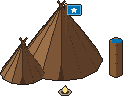
La primera
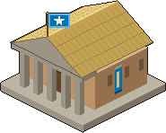
Base Casa
Casa Aldeano
Aldeano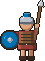
Guerrero Lancero
Lancero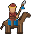
ExploradorEdad 2
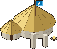
150 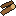
 Campamento
Campamento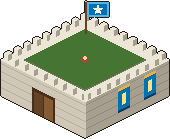
Cuartel Señuelo
Señuelo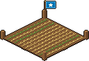
Granja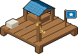
Muelle Torre
Torre Atalaya
Atalaya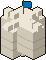
Muralla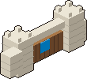
Puerta Arquero
ArqueroEdad 3

500150100 90 s
La de siempre: la partida rápida empieza aquí
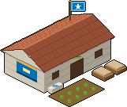
Hospital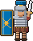
Unidad únicaEdad 4
600200100 120 s
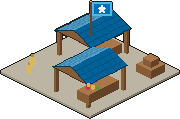
Mercado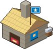
Herrería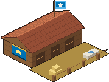
Establo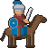
CaballeroEdad 5
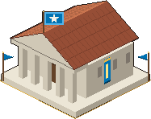
1100500300 150 s
y un edificio de la Edad de los reinos
| Cavernas | Piedra | Metales | Reinos | Imperial | |
|---|---|---|---|---|---|
| Casa | 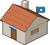 | 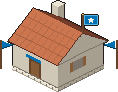 | 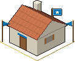 | ||
| Cuartel | Desde: Piedra | 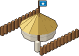 |  | 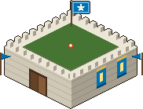 | 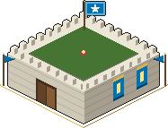 |
| Campamento | Desde: Piedra | 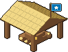 | 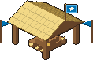 | 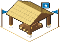 | |
| Torre | Desde: Piedra | 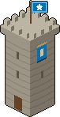 | 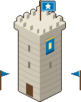 | 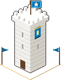 | |
| Aldeano | 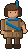 | ||||
| Guerrero | 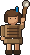 | 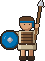 |  | 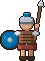 | 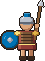 |
| Lancero | 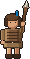 | 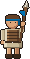 | 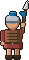 | 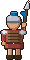 | 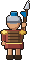 |
| Arquero | 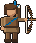 | 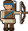 | 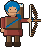 | 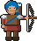 | 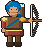 |
Los construyen los aldeanos. Mientras nadie llega, la obra es un plano que solo ves tú; con el constructor aparece el andamio. Las obras se pueden cruzar y no se pueden atacar: para frenarlas, ataca a los constructores. Un edificio atacado no se puede reparar hasta 6 s después del último golpe.
No se construye. Entrena aldeanos, recibe todos los recursos y es donde se sube de edad. Con «Refugio» guarda a tus aldeanos; si baja a la mitad de su vida, salen a escapar.
Cada casa suma 5 al tope de población. Constrúyelas antes de quedarte sin lugar.
Punto de entrega de madera, oro, piedra y comida. Ponlo junto al bosque o a las minas para que tus aldeanos caminen menos.
Requiere: Edad de piedra
Entrena guerreros, lanceros, arqueros y la unidad única. Guarda hasta 10 soldados que salen solos si ven enemigos.
Requiere: Edad de piedra, Casa
Engaña al rival: lo ve como un campamento y la IA lo trata como uno de verdad.
Requiere: Edad de piedra, Casa
Comida que no se agota. Junto al agua (3 celdas) da un 20 % más. La lluvia la ayuda; la nieve y la sequía la frenan.
Requiere: Edad de piedra
Va en la orilla. Recibe la comida de los pescadores.
Requiere: Edad de piedra
Dispara sola a enemigos y lobos. Toca «Vigilar» sobre ella y tus soldados hacen la ronda.
Requiere: Edad de piedra, Cuartel
Ve muy lejos, también de noche. Avisa al ver enemigos y saca a sus 5 soldados a pelear.
Requiere: Edad de piedra, Casa
Se traza arrastrando el dedo. Corta el paso al enemigo y a los lobos; pegada al borde del mapa también cierra.
Requiere: Edad de piedra
Tres tramos con portón: pasan los tuyos, no el rival. Se pone encima de tu muralla y dispara.
Requiere: Edad de piedra, Cuartel
Cura sola a tus unidades heridas cercanas y, más rápido, a las que entran.
Requiere: Edad de los metales, Casa
Compra y vende de a 100 por oro. Si abusas de lo mismo, el precio empeora; después vuelve solo.
Requiere: Edad de los reinos
Investiga las mejoras de herramientas, ataque y armadura.
Requiere: Edad de los reinos
Entrena caballeros.
Requiere: Edad de los reinos, Cuartel
El daño de cada golpe es el ataque menos la armadura del otro (mínimo 1). Los arqueros hacen la mitad a los edificios. Atacando un edificio, tus soldados se dan vuelta contra los defensores y los constructores cercanos, y sus compañeros acuden a ayudar.
El lancero le gana al caballero, el caballero al arquero y el arquero al lancero (y a toda la infantería). La flecha va del que gana al que pierde, con el daño extra de cada golpe.
Se entrena en: Base · 8 s
Fuerte: Junta, construye, repara y caza
Débil: Huye de los soldados
Se entrena en: Base · 10 s
Fuerte: Descubre el mapa; de noche casi no lo ven
Débil: Pelea poco
Se entrena en: Cuartel (en las cavernas, la Base) · 10 s
Fuerte: Barato y resistente
Débil: Arqueros en grupo
Se entrena en: Cuartel (en las cavernas, la Base) · 10 s
Fuerte: Caballería (+12 de daño)
Débil: Arqueros
Se entrena en: Cuartel · 11 s
Fuerte: Infantería (+3 de daño), desde lejos
Débil: Caballería y el cuerpo a cuerpo
Se entrena en: Establo · 14 s
Fuerte: Arqueros y el carro (+5 de daño)
Débil: Lanceros
Única de Roma · Se entrena en: Cuartel · 13 s
Fuerte: Mucha armadura: aguanta el frente
Débil: Lento
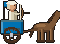
Única de Egipto · Se entrena en: Cuartel · 14 s
Fuerte: Dispara mientras se mueve
Débil: Caballeros
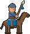
Única de Mongoles · Se entrena en: Cuartel · 13 s
Fuerte: El más rápido: hostiga y persigue
Débil: Lanceros
Cada una tiene su ventaja, su unidad única, sus edificios y su forma de jugar cuando es el rival.
Infantería y defensa
Soldados de a pie +15% de vida. Edificios +20% de vida. Unidad única: Legionario.
Como rival: Defensiva: amuralla y guarda
Economía y construcción
Aldeanos recolectan 20% más rápido. Edificios cuestan 20% menos madera. Unidad única: Carro de guerra.
Como rival: Constructora: crece rápido y se expande
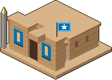
Caballería y ataque rápido
Unidades militares 15% más rápidas. Caballería se entrena 25% más rápido. Unidad única: Jinete.
Como rival: Agresiva: ataca temprano y seguido
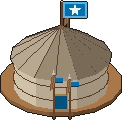
El mundo tiene día y noche, estaciones y clima, y se repone solo: los recursos que se agotan vuelven con el tiempo.
Madera. Talado, vuelve a crecer en su lugar a los 4 min.
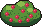
Comida cerca de casa. Vuelve a crecer en otro lugar (con nieve, no).
Oro para las unidades fuertes y las mejoras. Agotada, se renueva a los 10 min.
Piedra para torres, murallas y edades. Se renueva igual que la mina.
Comida en los lagos (300). Se pesca desde la orilla y se repone solo.
Los aldeanos llevan hasta 10 por viaje hasta la Base, un Campamento o un Muelle.
Caza: tócalo con un aldeano para cazarlo. Da comida. Se reponen: nace uno cada 90 s hasta los del principio.
Amenaza: ataca a quien se acerque a su guarida. Mándale soldados.
Decoración: da vida al campo. No se puede cazar.
| Clima | Qué cambia | Cuándo sale |
|---|---|---|
| Despejado | Sin cambios. | Primavera, Verano, Otoño, Invierno |
| Lluvia | Las unidades van un 15 % más lentas; las granjas dan un 10 % más. | Primavera, Verano, Otoño |
| Nieve | Las granjas dan un 30 % menos y los arbustos no rebrotan. | Invierno |
| Sequía | Las granjas sin riego dan un 30 % menos (las de junto al agua, igual). | Verano |
| Bruma | Unidades y torres ven un 40 % menos. | Primavera, Otoño, Invierno |
De día cuidan su guarida. De noche cazan a los aldeanos que están solos, lejos del pueblo y de las torres. Al anochecer se avisa; tus aldeanos huyen de ellos.
Sube con comida variada, lugar en las casas y defensas; baja sin comida o después de un ataque. Alta: tu gente trabaja un 10 % más rápido; baja, un 10 % más lento. Toca «Moral» para ver por qué.
Elige un lobo o un edificio del rival y toca «Trabajo» (5 de oro, hasta 3 a la vez): los soldados quietos que estén cerca van solos.
Un aldeano sin rol que queda quieto vuelve solo a lo último que juntaba. Las burbujas dicen qué piensa: herramienta, espada, peligro, trabajo, plato vacío o Zzz.
Cada tanto llegan ciervos, una manada de lobos (con aviso 30 s antes), la carreta de un comerciante (solo si tienes un Mercado: va hasta él, nadie la puede atacar y su trato se acepta tocando el Mercado) o un banco de peces nuevo. En el Mercado también puedes llamar al comerciante viendo un anuncio. Se apagan en la partida personalizada.
En las partidas sin rival acampan bandidos: tantos como el 80 % de tus soldados, en hasta 3 grupos. Cuidan su campamento, a veces salen a saquear (con aviso) y se alejan de tus torres. Si destruyes el campamento, te llevas su botín.
Si cierras el juego y vuelves a tu partida, el mundo avanzó hasta 30 minutos: crecieron árboles, nacieron ciervos y se repusieron los peces. Nada tuyo se pierde.
Se investigan de a una por herrería. Las de nivel II piden la Edad imperial y la de nivel I. Las de ataque y armadura sirven también para los soldados que ya tienes.
| Mejora | Edad | Costo | Tiempo | Qué hace |
|---|---|---|---|---|
| Herramientas I | Reinos | 150100 | 30 s | Tus aldeanos juntan un 15 % más rápido. |
| Forja I | Reinos | 15075 | 30 s | Tus soldados pegan +1. |
| Armadura I | Reinos | 12575 | 30 s | Tus soldados tienen +1 de armadura. |
| Herramientas II | Imperial | 300150 | 45 s | Tus aldeanos juntan otro 15 % más rápido. |
| Forja II | Imperial | 250200 | 45 s | Tus soldados pegan otro +1. |
| Armadura II | Imperial | 250175 | 45 s | Tus soldados tienen otro +1 de armadura. |
Todo se maneja con el dedo.
Toca una unidad para elegirla y toca el mapa para mandarla. Mantén el dedo para sumar unidades; «Área» elige con un rectángulo.
Arrastra para mover el mapa y pellizca para acercar o alejar.
Elige un aldeano, toca «Construir» y arrastra el edificio al mapa. «Construir» confirma y «Quitar» lo descarta. La muralla se traza arrastrando.
El menú redondo junto al aldeano le da un rol: leñador, minero de oro o de piedra, recolector, pescador o constructor. Con rol, busca trabajo solo.
Atacar, Patrullar entre puntos, Vigilar una zona (o una torre), Entrar en un edificio y Detener.
Ejército, Ociosos, Mi base, Área y Sumar. Arriba: Poder, Auto, Objetivos, el reloj del mundo, la velocidad y la pausa.